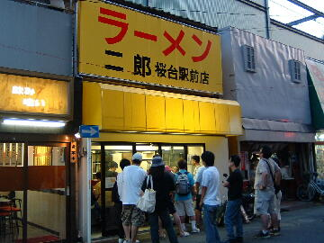
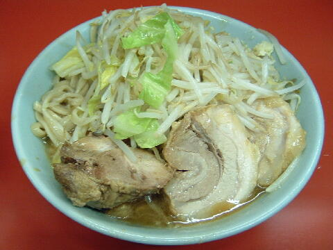
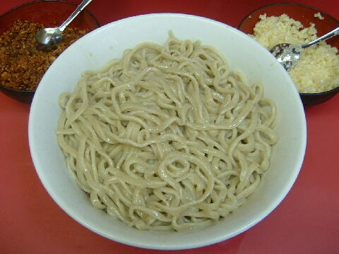

練馬区 桜台 1-5-1
日・祝（不定休）
11：00〜14：00（平日昼の部は油そばのみの提供） 17：30〜23：30
木・金 17：30〜23：30
土 10：00〜16：00

小ラーメン 700円、小豚入り 850円
大ラーメン 800円、大豚入り 950円
生たまご 50円、ネギ 100円、エビ油 100円
店員は、ハーレー好きの男前店主と助手。
コショウ、トウガラシ、醤油ダレ。
券売機上に魚粉等があるときもある。
レンゲ無。エコ箸。ティッシュ無。名刺無。
BGMは、J-WAVE GROOB LINE Z。
トッピングは、二郎基準。マシにすると大量。
昼の部は油そばのみの提供となる。
油そば 600円、油大盛 700円
ラーメン二郎 桜台駅前店 桜台駅前店のTwitter
メルマガは「a0001676414@mobile.mag2.com」で用意されている。
「ラーメン二郎 桜台」でヤフー検索
「ラーメン二郎 桜台」でヤフーリアルタイム検索
「ラーメン二郎 桜台」でグーグル検索

小豚入り ニンニク
麺は、ツルツルでプリプリした食感のチジレ気味の麺。大は小の倍に近い。
ぶたは、バラ肉と腕肉が混ざっており、どちらも大ぶりで厚切り。
スープは、乳化タイプ。醤油とコクで美味い。
ヤサイは、モヤシ9：キャベツ1といったところ。ゆで方はシャキ。
ニンニクは、細かく刻まれた生ニンニクでカライ。

油そば
トッピングはなし。ニンニクは卓上に生と揚げが用意されている。
温かい麺とタレと刻まれた豚２枚分をまぜて食らう。
昼の部限定。
限定で冷たい麺や塩味や味噌味のときもある。メルマガで告知される。
ＰＣ店